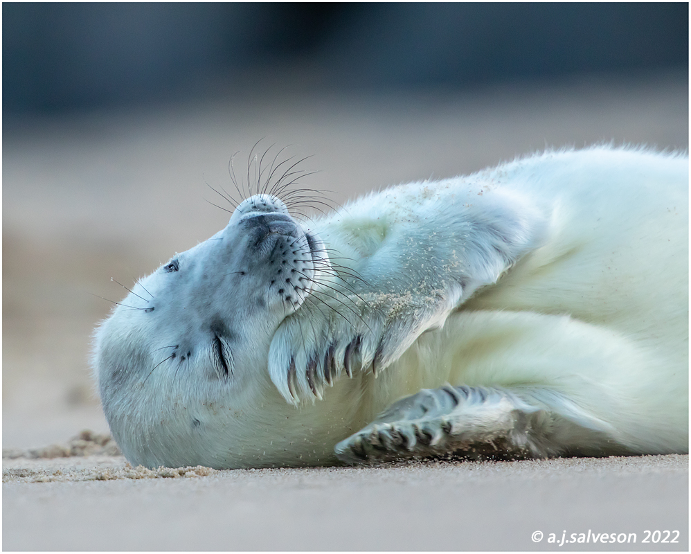

Top 5 facts you didn't know about seals!!!!
Get to know the “dogs of the sea" !!!
- 1. Seals sleep on land and in the water
- 2. Seals know how to hold their breath
- 3. Seals are also known as pinnipeds
- 4. While it may not look like it, seals do have ears!
- 5. Seals are known as the “dogs of the sea”
Seals typically sleep on land when they have pups or are searching for warmth. When sleeping in the water, seals are usually in a position called “bottling” where their bodies (except for their snout) remain completely underwater.
Dives vary per species. Harbor seals can stay underwater for up to 30 minutes. Elephant seals can hold their breath for up to 2 hours! How can they do it? Scientists found that seals and other marine mammals pack large amounts of oxygen into their muscles without “clogging them up.”
Seals and sea lions belong to a group of marine mammals called “pinnipeds.” In Latin, “pinniped” means “fin-” or “flipper-footed.” There are currently 33 different species of seals. The largest seal species is the Southern elephant seal, and the smallest is the ringed seal.
Earless seals, including the walrus and leopard seal, don’t look like they have ears at first glance. However, they’re actually hiding underneath the surface of their skin. What’s missing is a pinna (a visible external ear).
While not related to dogs, seals share certain traits. They’re known to be curious, playful, and sociable. But remember, seals are protected by the Marine Mammal Protection Act which makes it illegal to harass, pursue, or take animals from their environment. Many wild animals, including seals, are exploited in cruel entertainment venues, like marine amusement parks. Seals deserve to live freely in their natural habitats without fear of being mistreated and forced to perform for tourists. To help avoid cruel animal attractions while traveling, check our wildlife-friendly travel page for resources and other actions for animals.